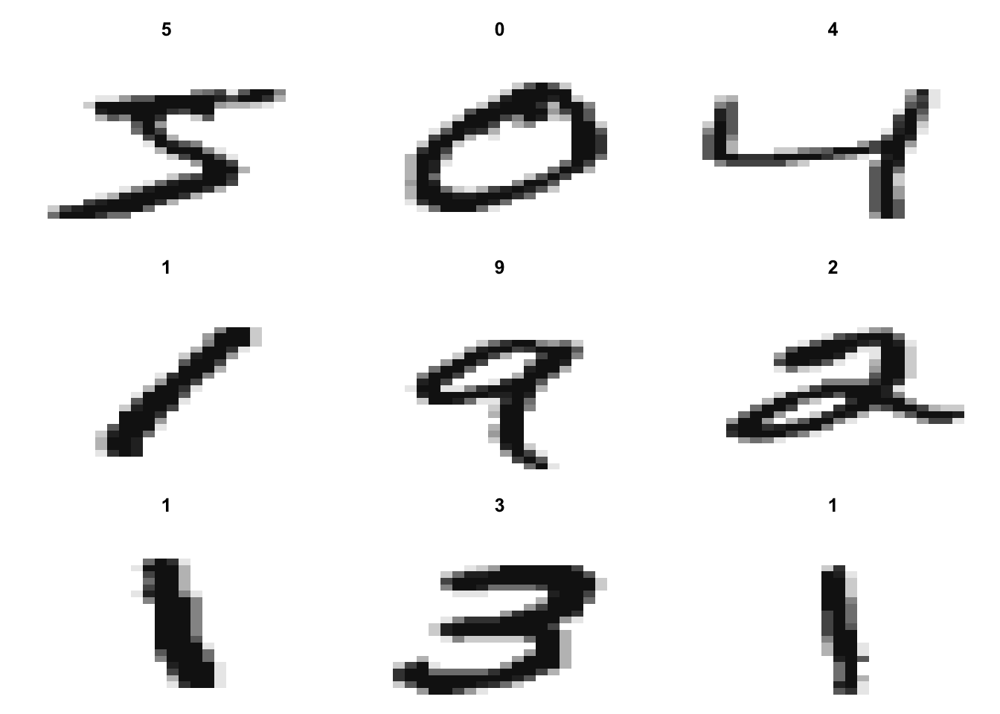

Chapter 6 NN: MNIST [ML|R,MATH]
Under the Hood: Neural Networks and Backpropagation
I made a vanilla neural network from scratch in R to showcase its inner workings.
Specifically, this is a multilayer perceptron (MLP) – a fully connected class of feedforward artificial neural network (ANN). An ANN equipped with backpropagation can learn non-linear classification tasks.
This is an “unofficial sequel” to my XOR project and demonstrates the mathematics behind backpropagation by learning how to classify handwritten digits.
I used the MNIST handwritten digits dataset.
6.1 Setup & Importing Data
First, I created a shell script to scrape and decompress the data so I can feed it into R:
#!/bin/zsh
wget https://data.deepai.org/mnist.zip \
&& unzip '*.zip' -d mnist-data/ \
&& rm *.zip && rm -rf __MACOSX/ \
&& cd mnist-data/ && gzip -d *.gzThen created helper functions to parse the data from byte-form:
# Returns a list of matrices containing image gray-scale values
read_imgs <- function(imgdb, n_get=0) {
images <- c()
readBin(imgdb, integer(), n=1, endian="big")
n_imgs <- readBin(imgdb, integer(), n=1, endian="big")
if(n_get==0)
n_get <- n_imgs
nrows <- readBin(imgdb, integer(), n=1, endian="big")
ncols <- readBin(imgdb, integer(), n=1, endian="big")
for(i in 1:n_get) {
img <- matrix(readBin(imgdb, integer(), n=nrows*ncols, size=1, signed=FALSE),
nrows, ncols)
images <- c(images, list(img))
}
close(imgdb)
return(images)
}
# Returns a list of image labels
read_lbls <- function(lbldb, n_get=0) {
readBin(lbldb, integer(), n=1, endian="big")
n_lbls <- readBin(lbldb, integer(), n=1, endian="big")
if(n_get == 0)
n_get = n_lbls
lbls <- readBin(lbldb, integer(), n=n_get, size=1, signed=FALSE)
return(lbls)
}6.1.1 Data
# Get images
mnist_imgs <- file("mnist-data/train-images-idx3-ubyte", "rb")
imgs <- read_imgs(mnist_imgs, 9)
# Get labels
mnist_lbls <- file("mnist-data/train-labels-idx1-ubyte", "rb")
lbls <- read_lbls(mnist_lbls, 9)
# Display example digit with label
image(imgs[[1]][,28:1], col=gray(12:1/12), axes = FALSE, main=paste(lbls[1]))Figure 6.1: The first labeled digit in the MNIST dataset
# 9 labeled digits
par(mfrow=c(3,3))
par(mar=c(0, 0, 3, 0))
for(i in 1:9){
image(imgs[[i]][,28:1], col=gray(12:1/12), axes=FALSE, main=paste(lbls[i]))
}
# Number of pixels
length(imgs[[1]])## [1] 7846.2 Algorithm
The 10 output nodes represent the digits
Since the images are 28 by 28 we have pixels, or 784 input nodes
The number of hidden nodes determines the model’s complexity; i.e., underfitting or overfitting
- Can be tuned; for this example, I chose 28 (elegance and it saves some computation)
This is a showcase of the “heart” of the neural network; in practice, this algorithm would be running in batches with weights updated over epochs. To not take away from the mathematics (and for brevity’s sake) the algorithm only trains on one example.
6.2.1 Initialize
This example focuses on the first digit from Figure 6.1, providing a walkthrough of how the learning process works for classifying a handwritten digit.
set.seed(1)
# Sigmoid
activate <- function(node) { return(matrix(1/(1+exp(-node)))) }
# Derivative
sigprime <- function(node) { return(matrix(activate(node)*(1 - activate(node)))) }
model <- list()
errs <- list()
# Learning rate
alpha <- 0.25
# Number of input, hidden, output nodes
network <- c(784, 28, 10)
# Using the first digit number 5 for example
model$input <- matrix(imgs[[1]])
# Since the first label is 5, it's the 6th index of our truth vector
truth <- matrix(rep(0,10), ncol=1)
truth[lbls[1]+1] <- 1
truth## [,1]
## [1,] 0
## [2,] 0
## [3,] 0
## [4,] 0
## [5,] 0
## [6,] 1
## [7,] 0
## [8,] 0
## [9,] 0
## [10,] 0# Initialize nodes
model$nodes <- mapply(matrix, data=0, ncol=1, nrow=network)
lengths(model$nodes)## [1] 784 28 10# Initialize random weights
model$weights <- lapply(1:(length(network)-1),
function(k) {
matrix(rnorm(network[k+1]*network[k]),
nrow=network[k+1], ncol=network[k])
})
lengths(model$weights)## [1] 21952 280# Initialize random biases
b <- numeric()
b <- lapply(network[-1], rnorm)
model$biases <- mapply(matrix, data=b, ncol=1, nrow=network[-1])
lengths(model$biases)## [1] 28 106.2.2 Learn
For each iteration, the training example undergoes one forward pass and one backward pass.
During the backward pass, the weights are updated according to the gradient of the quadratic loss function – as derived in the XOR project.
# Iterations
N = 250
for(i in 1:N) {
# Feed Forward
model$nodes[[1]] <- matrix(model$input)
# Activate hidden layer
model$nodes[[2]] <- model$weights[[1]]%*%model$nodes[[1]] + model$biases[[1]]
model$active[[1]] <- activate(model$nodes[[2]])
# Activate output layer
model$nodes[[3]] <- model$weights[[2]]%*%model$active[[1]] + model$biases[[2]]
model$active[[2]] <- activate(model$nodes[[3]])
# Backpropagation
errs[[i]] <- model$active[[2]] - truth
delta_w <- list()
delta_w[[2]] <- alpha * (truth - model$active[[2]]) * sigprime(model$nodes[[3]])
delta_w[[1]] <- (t(model$weights[[2]])%*%delta_w[[2]]) * sigprime(model$nodes[[2]])
# Update weights
w2 <- model$weights[[2]] + delta_w[[2]]%*%t(model$active[[1]])
w1 <- model$weights[[1]] + delta_w[[1]]%*%t(model$nodes[[1]])
model$weights[[2]] <- w2
model$weights[[1]] <- w1
# Update biases
b2 <- model$biases[[2]] - alpha*delta_w[[2]]
b1 <- model$biases[[1]] - alpha*delta_w[[1]]
model$biases[[2]] <- b2
model$biases[[1]] <- b1
# Print results
if(i %% 10 == 0 && i < 70){
print("--------------------")
print(paste("Iteration", i, "Guess:",
which.max(as.vector(model$active[[2]])) - 1))
print(matrix(model$active[[2]]))
} else if(i == N){
print("--------------------")
print(paste("Iteration", i, "Guess:",
which.max(as.vector(model$active[[2]])) - 1))
print(matrix(model$active[[2]]))
}
}## [1] "--------------------"
## [1] "Iteration 10 Guess: 4"
## [,1]
## [1,] 0.1616835267
## [2,] 0.1264294918
## [3,] 0.0682142668
## [4,] 0.2038745379
## [5,] 0.9941272877
## [6,] 0.0569540176
## [7,] 0.0008336876
## [8,] 0.9663277915
## [9,] 0.0124175449
## [10,] 0.0368053450
## [1] "--------------------"
## [1] "Iteration 20 Guess: 4"
## [,1]
## [1,] 0.1014268525
## [2,] 0.0899760227
## [3,] 0.0597189587
## [4,] 0.1110630825
## [5,] 0.9925675618
## [6,] 0.6975266674
## [7,] 0.0008336663
## [8,] 0.7302379058
## [9,] 0.0123492076
## [10,] 0.0352006765
## [1] "--------------------"
## [1] "Iteration 30 Guess: 4"
## [,1]
## [1,] 0.079083747
## [2,] 0.073107411
## [3,] 0.053704279
## [4,] 0.083607664
## [5,] 0.989914254
## [6,] 0.875496648
## [7,] 0.000833645
## [8,] 0.155205187
## [9,] 0.012281978
## [10,] 0.033785417
## [1] "--------------------"
## [1] "Iteration 40 Guess: 4"
## [,1]
## [1,] 0.0667571496
## [2,] 0.0629770018
## [3,] 0.0491670468
## [4,] 0.0694771807
## [5,] 0.9844647273
## [6,] 0.9107698051
## [7,] 0.0008336237
## [8,] 0.0996000976
## [9,] 0.0122158252
## [10,] 0.0325252556
## [1] "--------------------"
## [1] "Iteration 50 Guess: 4"
## [,1]
## [1,] 0.0587198417
## [2,] 0.0560652580
## [3,] 0.0455913634
## [4,] 0.0605741282
## [5,] 0.9677833352
## [6,] 0.9273060284
## [7,] 0.0008336023
## [8,] 0.0781756562
## [9,] 0.0121507221
## [10,] 0.0313939679
## [1] "--------------------"
## [1] "Iteration 60 Guess: 5"
## [,1]
## [1,] 0.052966646
## [2,] 0.050975717
## [3,] 0.042681855
## [4,] 0.054330558
## [5,] 0.768476767
## [6,] 0.937292543
## [7,] 0.000833581
## [8,] 0.066196623
## [9,] 0.012086641
## [10,] 0.030371123
## [1] "--------------------"
## [1] "Iteration 250 Guess: 5"
## [,1]
## [1,] 0.0244670572
## [2,] 0.0242512556
## [3,] 0.0231158041
## [4,] 0.0246047195
## [5,] 0.0282727666
## [6,] 0.9746982789
## [7,] 0.0008331762
## [8,] 0.0255317191
## [9,] 0.0110330649
## [10,] 0.0203249132Recall that since R indexes by 1 we need to subtract 1 from which.max() to get the actual number.
By iteration 60 it switched its answer to 5 but still held onto 4 as a somewhat close second.
We notice however by the 250th iteration, on its noble quest to clear the remnants of its error, it’s certain the correct answer’s 5.
for(i in 1:length(errs)){
if(i %% 10 == 0 && (i < 70 || i == N)){
print(paste("Errors -- Iteration", i))
print(paste(errs[[i]]))
}
}## [1] "Errors -- Iteration 10"
## [1] "0.161683526706662" "0.126429491773764" "0.0682142668115703"
## [4] "0.203874537919715" "0.994127287704014" "-0.943045982396918"
## [7] "0.000833687636843194" "0.966327791499464" "0.0124175448799003"
## [10] "0.0368053450002197"
## [1] "Errors -- Iteration 20"
## [1] "0.101426852454415" "0.0899760227150036" "0.0597189587251529"
## [4] "0.11106308253193" "0.992567561771656" "-0.302473332555646"
## [7] "0.00083366630628941" "0.730237905751141" "0.0123492076029388"
## [10] "0.0352006764929306"
## [1] "Errors -- Iteration 30"
## [1] "0.0790837469870936" "0.073107410627621" "0.0537042786567521"
## [4] "0.0836076637326415" "0.989914254344727" "-0.124503351562107"
## [7] "0.000833644977371914" "0.155205186699078" "0.0122819775282261"
## [10] "0.0337854167653882"
## [1] "Errors -- Iteration 40"
## [1] "0.0667571495768358" "0.0629770017850248" "0.0491670467964501"
## [4] "0.0694771807081971" "0.984464727283454" "-0.0892301948984062"
## [7] "0.000833623650090492" "0.0996000976300502" "0.0122158251682742"
## [10] "0.0325252556194334"
## [1] "Errors -- Iteration 50"
## [1] "0.0587198417202392" "0.0560652580072607" "0.0455913634312125"
## [4] "0.0605741281916175" "0.96778333516366" "-0.072693971563165"
## [7] "0.000833602324444938" "0.0781756561618741" "0.0121507221215724"
## [10] "0.0313939678634957"
## [1] "Errors -- Iteration 60"
## [1] "0.0529666457980008" "0.0509757169601339" "0.0426818547984694"
## [4] "0.0543305581185968" "0.768476767077998" "-0.062707456643689"
## [7] "0.000833581000435041" "0.0661966226652927" "0.0120866410217594"
## [10] "0.0303711231306996"
## [1] "Errors -- Iteration 250"
## [1] "0.0244670571849342" "0.024251255591348" "0.0231158041089027"
## [4] "0.0246047194786425" "0.0282727666393937" "-0.0253017210800204"
## [7] "0.00083317615474425" "0.025531719110534" "0.011033064925959"
## [10] "0.0203249132299526"Aside
“Humanizing” the algorithm as such helps shine a light on what the hidden features could represent in this kind of modeling:
The training example (Figure 6.1) does kind of look like a 4 rotated 90 degrees clockwise – so it’s understandable why the model was confused for a while. It’s also curious how in the early iterations it has 7 as a close second – this 5 is written in a jagged form with edges like a 7, so it also makes sense.
Additionally, recall that this model trained on one 5. The more training examples of 5s it’s fed, the better it’ll get at classifying different variations of handwritten 5s.
Generally speaking, this model would be ran on all of the handwritten digits in the training set (0-9). Subsequently, the weights are adjusted in such a way that allows the model to take any of the aforementioned digits as input and properly classify which digit it is.
Therefore, the more instances of each digit in the training set, the better the model is at classifying each digit and its respective handwritten variations.